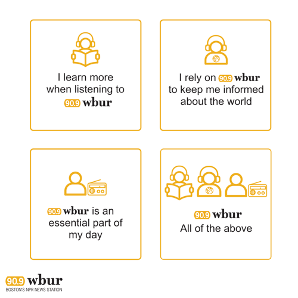

Exploration of new audience experience
Project Type: Internship
Roles: UX Researcher
Team: Individual work
Timeline: Summer 2018
Whether it’s an interview on-air, a news story that caught someone’s eye on our website, an episode of a podcast with critical thinking, or a post on social media, public radio is no longer just a voice people listen to during drive time on the car radio. Every touch WBUR has with our audience contributes to our audience’s experience, and impacts how they relate to our station.
Through previous BizLab research, we know that our listeners discover us through multiple scenarios and have kept listening to us for different reasons. Some people formed the habit of listening to WBUR when they were a child in the backseats of cars when their parents tuned into WBUR (or another local NPR station) during family drives. Other people started listening to WBUR while taking a college course, as part of a course assignment. Others found WBUR through a colleague’s or friend’s recommendation. In some cases, people moved to Boston and transferred their listening from another city’s NPR station to WBUR. And others did not have an affinity for public radio at all, but were seeking quality journalism and captivating programs, and found WBUR by surfing the radio dial or browsing podcast recommendations, and became a loyal listener because of the quality content WBUR produces.
Our survey and metrics show that our audience is consuming our content on multiple platforms. Between our live stream, podcasts, and on-demand programs, people who used to listen by physical radios are migrating to digital platforms, leveraging the meaning of “experience” for public radio: people interact with our station across platforms and medium.
Behind all of these many paths that lead people to WBUR, and the many forms of engagement with WBUR, we want to know if there are fundamentally different motivations amongst our listeners in why they listen, and donate, to WBUR. Does WBUR meet people’s needs in different ways? What makes them loyal to WBUR and consider themselves as a part of WBUR community? And given all this, what is the most effective way to drive them towards an altruism moment, where they donate to WBUR?
Read more in the published blog "It is no logner just a radio experience"
There are 500,000 unique individuals listening to WBUR each week. How do we communicate effectively with each of them about why they listen to WBUR, what makes them loyal to the program, and what drives them to donate? Our answer is to use personas. A user persona is a fictional, yet realistic, description of a person who uses your product. In this case, someone who consumes WBUR’s content. By creating a set of representative personas, we are able to reduce our audience down to a “manageable and memorable set of characters,” and then design unique messages for each character in order to explore how to reach all our audience members.
Read more in the published blog "Creating WBUR Personas"

Screens of Mobile and Watch Interface
With three personas in hand, we designed an experiment to test the effectiveness of communicating to WBUR’s audience by persona. We wanted to determine two things with an experiment: know if the personas reflect unique populations in our listener audience and understand, if we communicated to users in the language and perspective of their persona, that they will engage more with us. As a reminder, the three personas are the Aspirational Learner, the World Citizen, and the Lifelong Listener which represent why someone listens to WBUR: either to get smarter, to track the news, or to feel an emotional connection.
The structure of the experiment was to find users loyal to WBUR via Facebook Ads, ask them a question to have them self-select their persona, and then take them through a series of interactive messages explaining why they should donate. If everything worked perfectly, users who got the correct persona messaging would complete a donation.
Check out the experiment digital experience Why do you love WBUR?
To evaluate our donation personas, we ran ads on Facebook for three days pointing to our persona donation experiment. As outlined in our previous blog post, we wanted to determine two things with the experiment: if the personas reflect unique populations in our listener audience and, if we communicated to in the language and perspective of their personas, if listeners will engage more with us. From these ads, we had 406 participants in the experiment. Below is a summary of our discoveries and observations.